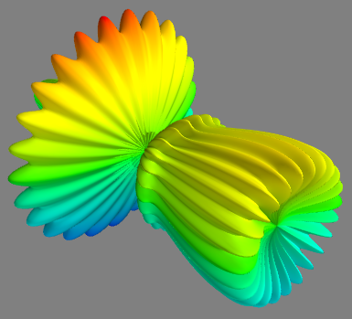
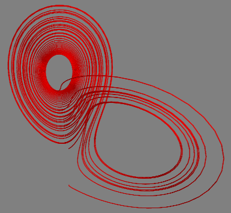
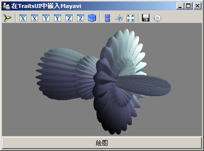

Mayavi-更方便的可视化
虽然VTK 3D可视化软件包功能强大，Python的TVTK包装方便简洁，但是要用这些工具快速编写实用的三维可视化程序仍然需要花费不少的精力。因此基于VTK开发了许多可视化软件，例如：ParaView、 VTKDesigner2、Mayavi2等等。
Mayavi2完全用Python编写，因此它不但是一个方便实用的可视化软件，而且可以方便地用Python编写扩展，嵌入到用户编写的Python程序中，或者直接使用其面向脚本的API：mlab快速绘制三维图。
用mlab快速绘图
和Chaco的shell或者matplotlib的pylab一样，mayavi的mlab模块提供了方便快捷的绘制三维图函数。只要把数据准备好，通常只需要调用一次mlab的函数就可以看到数据的三维显示效果。非常适合在IPython中交互式地使用。下面让我们来看一个例子：
import numpy as np
from enthought.mayavi import mlab
x, y = np.ogrid[-2:2:20j, -2:2:20j]
z = x * np.exp( - x**2 - y**2)
pl = mlab.surf(x, y, z, warp_scale="auto")
mlab.axes(xlabel='x', ylabel='y', zlabel='z')
mlab.outline(pl)

使用Mayavi将二维数组绘制成3D曲面
我们先用下面的语句载入mlab库：
from enthought.mayavi import mlab
然后通过调用mlab.surf绘制一个三维空间中的曲面。曲面上的每个点的坐标由surf函数的三个二维数组参数x,y,z给出。由于数组x,y是由ogrid对象算出，它们分别是shape为n1和1n的数组，而z是一个n*n的数组。
通过调用mlab.axes和mlab.outline函数，分别在三维空间中添加坐标轴，和曲面区域的外框。
surf绘制的曲面在X-Y平面上的投影是一个等距离的网格，如果需要绘制更复杂的三维曲面的话，可以使用mesh函数。下面是mesh函数的一个例子：
# -*- coding: utf-8 -*-
from numpy import *
from enthought.mayavi import mlab
# Create the data.
dphi, dtheta = pi/20.0, pi/20.0
[phi,theta] = mgrid[0:pi+dphi*1.5:dphi,0:2*pi+dtheta*1.5:dtheta]
m0 = 4; m1 = 3; m2 = 2; m3 = 3; m4 = 6; m5 = 2; m6 = 6; m7 = 4;
r = sin(m0*phi)**m1 + cos(m2*phi)**m3 + sin(m4*theta)**m5 + cos(m6*theta)**m7
x = r*sin(phi)*cos(theta)
y = r*cos(phi)
z = r*sin(phi)*sin(theta)
# View it.
s = mlab.mesh(x, y, z, representation="wireframe", line_width=1.0 )
mlab.show()

使用mesh函数绘制的3D旋转体
mesh和surf类似，其三个数组参数x, y, z也是二维数组，他们相同下标的三个元素组成曲面上某点的三维坐标。点之间的连接关系(边和面)由其在x,y,z数组中间的位置关系决定。
由于这个程序所计算的曲面是一个旋转体，曲面上的各个点的坐标是在球面坐标系中计算的，然后按照坐标转换公式将球面坐标转换为X-Y-Z坐标。
通过传递一个关键字参数representation给mesh函数，可以指定绘制的表现形式：
surface : 缺省值，绘制曲面
wireframe : 绘制边线，将dphi, dtheta的改为较大值，例如pi/20之后，调用 ：
s = mlab.mesh(x, y, z, representation="wireframe", line_width=1.0 )
得到如下结果：

使用mesh函数绘制的线框模型
为了方便理解mesh函数是如何绘制出曲面的，我们通过手工输入坐标的方式，绘制如下图所示的立方体表面的一部分：

组成立方体的各个面和顶点坐标
x,y,z数组的定义如下：
x = [[-1,1,1,-1,-1],
[-1,1,1,-1,-1]]
y = [[-1,-1,-1,-1,-1],
[1,1,1,1, 1]]
z = [[1,1,-1,-1,1],
[1,1,-1,-1,1]]
x, y, z数组对应坐标的元素组成三维坐标点，因此这三个数组实际描述的坐标点为：
[
[(-1, -1, 1), (1, -1, 1), (1, -1, -1), (-1, -1, -1), (-1, -1, 1)]
[(-1, 1, 1), (1, 1, 1), (1, 1, -1), (-1, 1, -1), (-1, 1, 1)]
]
点之间的关系有其在数组中的下标决定，因此由：
(-1,-1,1),(1,-1,1),(-1,1,1),(1,1,1)
构成一个mesh中的一个面。依次类推，第二个面由：
(1,-1,1),(1,-1,-1),(1,1,1),(1,1,-1)
构成，一共定义有4个面。
下面详细介绍mlab中提供的绘图函数。
- points3d, plot3d : 给它们传递的3个坐标数组x,y,z都是一维的，因此这两个函数绘制出来的是三维空间中的一系列点(points3d)，或者是一条曲线(plot3d)。下图是采用plot3d绘制的洛仑兹吸引子的轨迹：

plot3d函数绘制的洛仑兹吸引子，曲线使用很细的圆管绘制
绘图语句的程序如下：
mlab.plot3d(track1[:,0], track1[:,1], track1[:,2],color=(1,0,0), tube_radius=0.1)
其中track1为轨迹坐标数组，将其拆分为X,Y,Z轴的三个分量之后，传递给plot3d函数进行绘图。tube_radius指定曲线的粗细，曲线实际上是采用极细的圆管绘制的。
洛仑兹吸引子的轨迹算法请参照： SciPy-数值计算库
- imshow, surf, contour_surf : 这三个函数都可以接收一个二维数组s，以其第一轴的下标为X轴坐标，第二轴的下标为Y轴坐标。imshow函数将此二维数组当作一个图片显示，每点的颜色为数组s的每个元素的值。surf函数则将此二维数组绘制成三维空间中的曲面，数组中每个元素的值为点的Z轴坐标。contour_surf则绘制二维数组的等高线。下面是imshow函数的绘制结果(所使用的数组和前面surf函数的例子相同)：

imshow函数将二维数组绘制成图像
同样的数据采用contour_surf函数绘制等高线的结果如下图所示：

contour_surf函数绘制二维图像的等高线
Mayavi应用程序
将Mayavi嵌入到界面中
Mayavi除了能够单独作为应用程序使用之外，也可以通过traits属性嵌入到TraitsUI制作的用户应用程序的界面中去，下面的程序演示了这一过程：
# -*- coding: utf-8 -*-
from enthought.traits.api import *
from enthought.traits.ui.api import *
from enthought.tvtk.pyface.scene_editor import SceneEditor
from enthought.mayavi.tools.mlab_scene_model import MlabSceneModel
from enthought.mayavi.core.ui.mayavi_scene import MayaviScene
class DemoApp(HasTraits):
plotbutton = Button(u"绘图")
scene = Instance(MlabSceneModel, ()) # mayavi场景
view = View(
VGroup(
Item(name='scene',
editor=SceneEditor(scene_class=MayaviScene), # 设置mayavi的编辑器
resizable=True,
height=250,
width=400
),
'plotbutton',
show_labels=False
),
title=u"在TraitsUI中嵌入Mayavi"
)
def _plotbutton_fired(self):
self.plot()
def plot(self):
g = self.scene.mlab.test_mesh()
app = DemoApp()
app.configure_traits()
程序一开始除了从traits和traits.ui库导入之外，还分别从不同的地方导入了SceneEditor、MlabSceneModel和MayaviScene等三个类。
MlabSceneModel类是包装整个mlab的场景的模型，它是属于模型(Model)方面的东西，因此程序中通过:
scene = Instance(MlabSceneModel, ())
创建一个traits属性scene，使它是MlabSceneModel类的对象。接下来要在视图(View)中创建一个编辑器，让它正确显示scene所代表的模型：
Item(name='scene',
editor=SceneEditor(scene_class=MayaviScene), # 设置mayavi的编辑器
resizable=True,
height=250,
width=400
)
SceneEditor是用来创建场景编辑器的工厂类，通过关键字scene_class指定真正创建场景对象类MayaviScene。
程序中我们还创建了一个plotbutton按钮，当此按钮被按下时，调用_plotbutton_fired函数，从而调用最后的绘制场景的函数plot，plot函数只有一句话：
g = self.scene.mlab.test_mesh()
scene.mlab和前面所介绍的mlab库一样使用，我们调用其test_mesh测试函数，快速在scene中创建一个如下图所示的很酷的曲面体。

将Mayavi嵌入到TraitsUI制作的界面中
下面让我们来看一个有些实用价值的程序，用户输入一个使用x,y,z等变量的函数f(x,y,z)，例如xx+yy+z*z，程序将使用此函数计算一个指定坐标范围之内的三维标量场。并且添加等值面和切面两个工具观察此标量场。等值面可以是自动计算，或者通过滚动条手工配置；而切面的位置和方向则可以直接在场景中用鼠标进行操作。完整的程序请参考三维标量场观察器，下面对程序中的重点部分进行说明。
用户点击描绘按钮之后，调用plot函数绘图，plot函数中首先计算三维标量场，注意我们使用mgrid快速产生三维网格，x0, x1, y0, y1, z0, z1, points, function等都是traits属性，可以通过界面直接修改其值：
# 产生三维网格
x, y, z = mgrid[
self.x0:self.x1:1j*self.points,
self.y0:self.y1:1j*self.points,
self.z0:self.z1:1j*self.points]
scalars = eval(self.function) # 根据函数计算标量场的值
然后清空当前的场景：
self.scene.mlab.clf() # 清空当前场景
接下来调用scene.mlab中的axes, contour3d, pipeline.scalar_cut_plane等函数在场景中添加等值面、坐标轴和切面：
# 绘制等值面
g = self.scene.mlab.contour3d(x, y, z, scalars, contours=8, transparent=True)
g.contour.auto_contours = self.autocontour
self.scene.mlab.axes() # 添加坐标轴
# 添加一个X-Y的切面
s = self.scene.mlab.pipeline.scalar_cut_plane(g)
cutpoint = (self.x0+self.x1)/2, (self.y0+self.y1)/2, (self.z0+self.z1)/2
s.implicit_plane.normal = (0,0,1) # x cut
s.implicit_plane.origin = cutpoint
最后更新几个属性，其中v0和v1是标量场的最小和最大值，用来设置等值面滚动条的取值范围：
self.g = g
self.scalars = scalars
# 计算标量场的值的范围
self.v0 = np.min(scalars)
self.v1 = np.max(scalars)
当界面中的“自动等值”选项值(autocontour属性)改变时，通过调用如下程序改变场景中的等值面的自动选项：
self.g.contour.auto_contours = self.autocontour
当界面中的滚动条值(contour属性)发生变化时，通过下面的程序修改场景中等值面的值:
if not self.g.contour.auto_contours:
self.g.contour.contours = [self.contour]
剩下的部分都是使用标准的traits和TraitsUI库编写的，请参考TraitsUI-轻松制作用户界面，这里就不再多解释了。
此程序的界面截图如下图所示：

三维标量场观察器：x*y*0.5+2*y*sin(2*x)+y*z*2.0